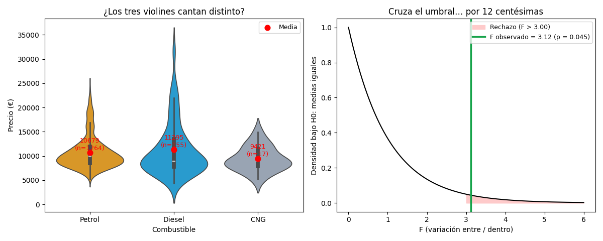

Unidad 6 · Regresión lineal simple y múltiple · Lección 0044
ANOVA: ¿los tres combustibles valen distinto de verdad?
Win de hoy: ANOVA juzga las 3 medias juntas (nafta 10.679, diésel 11.295, GNC 9.421 €): F = 3,12, p = 0,045 — significativo… por 12 centésimas. Un veredicto justito que pide lupa, no festejo.
1 · Por qué no hacer 3 t-tests
Con 3 grupos podrías comparar de a pares (nafta-vs-diésel, nafta-vs-GNC, diésel-vs-GNC). Problema: cada test tiene 5 % de falsas alarmas, y con 3 tests la chance de alguna falsa alarma trepa a ~14 %. ANOVA hace un solo juicio global — H0: «las 3 medias son iguales» — y reparte la varianza total en dos: variación entre grupos (¿las medias se separan?) vs dentro de cada grupo (ruido). El estadístico F es el cociente: F ≈ 1 = ruido; F grande = los grupos cantan distinto.
2 · El juicio del combustible

Lectura triple: (1) p = 0,045 < 0,05: se rechaza H0 (lección 0042), pero tan justo que otra muestra podría no rechazarla — «significativo» ≠ «contundente». (2) ANOVA no dice qué par difiere (¿diésel-vs-GNC? ¿nafta-vs-diésel?): para eso existen los post-hoc (Tukey). (3) El GNC tiene n = 17: su media (9.421 €) baila mucho (ver lección 0006). Ojo extra: los grupos difieren en edad y peso — ANOVA univariado no aísla causas como la múltiple (0024).
Regenerar la figura (mismo resultado versionado en assets/img/toyota/):
python scripts/make_figures.py --only anova-comparar-medias3 · Supuestos (cuándo desconfiar)
| Supuesto | Qué pide | Nuestro caso |
|---|---|---|
| Independencia | Autos distintos, sin gemelos | OK razonable |
| Normalidad | Residuos ≈ normales por grupo | Dudoso: Price sesgado (ver 0046); n grande perdona |
| Homoscedasticidad | Misma dispersión por grupo | Dudoso: GNC n=17 vs nafta n=1264 |
Con n desparejo y p justito, el veredicto honesto es: «hay indicios (p = 0,045), no sentencia». Alternativa robusta si los supuestos fallan feo: Kruskal-Wallis (el ANOVA no paramétrico, por rangos).
4 · ANOVA en 8 líneas (reproducí F = 3,12)
import pandas as pd
from scipy import stats
df = pd.read_csv("../ToyotaCorolla.csv")
g = [df.loc[df["Fuel_Type"] == f, "Price"] for f in ["Petrol", "Diesel", "CNG"]]
print([round(x.mean(), 1) for x in g]) # [10679.3, 11294.6, 9421.2]
print([len(x) for x in g]) # [1264, 155, 17]
F, p = stats.f_oneway(*g)
print("F=%.2f p=%.4f" % (F, p)) # F=3.12 p=0.0446Tu turno: corré ANOVA de Price por tramos de edad (joven/medio/viejo, 3 grupos parejos):
vas a ver un F gigante y un p ≈ 0 — ese sí es contundente.
5 · Quiz (auto-chequeo inmediato)
6 · Fuente primaria y cierre
Para profundizar (1 fuente): Diez, Barr & Çetinkaya-Rundel, OpenIntro Statistics — cap. 5 (ANOVA). Más contexto en RESOURCES.
Siguiente: 0045 · Violín, densidad y torta: el gráfico que supera al boxplot, el histograma sin bins y la torta que sobredimensiona.